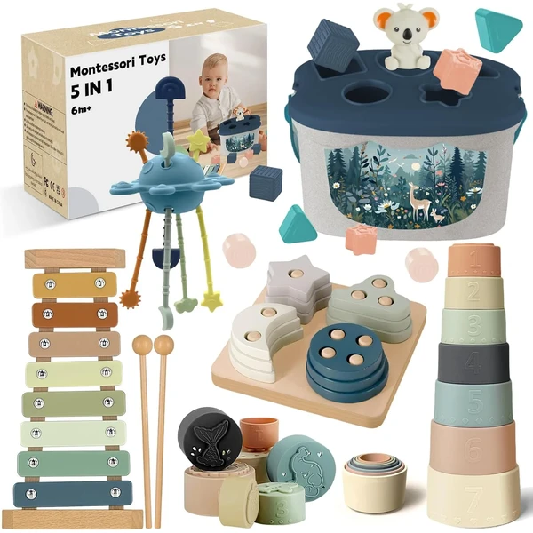
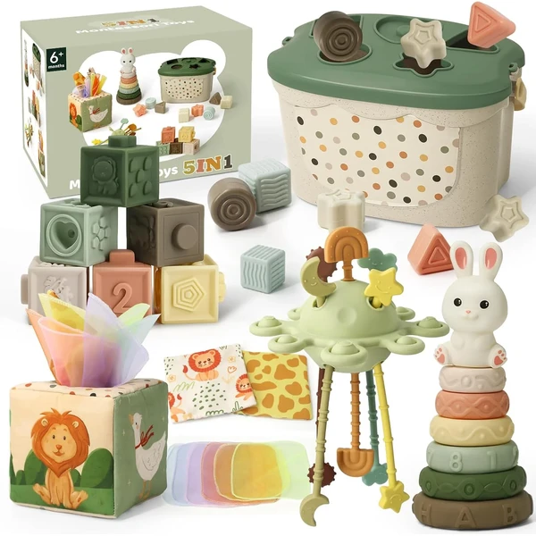
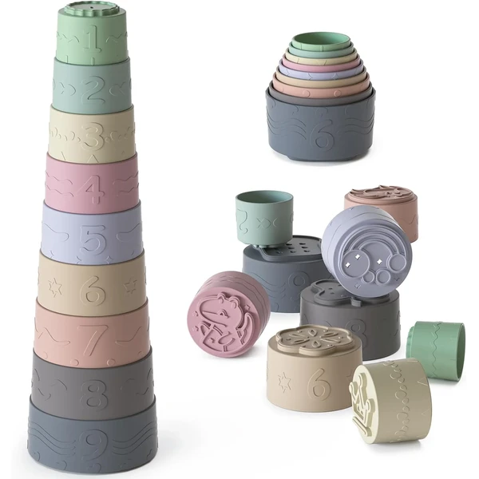
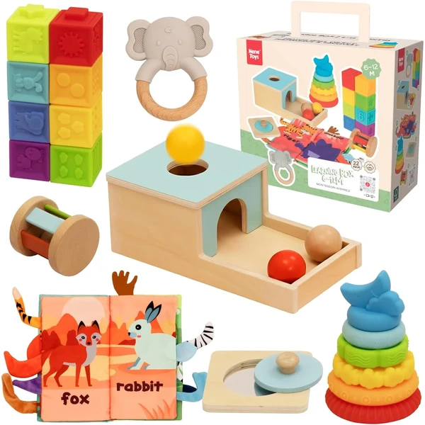
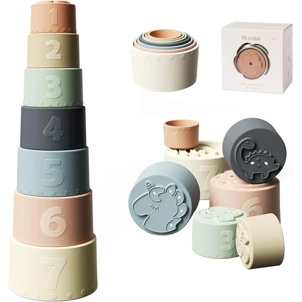
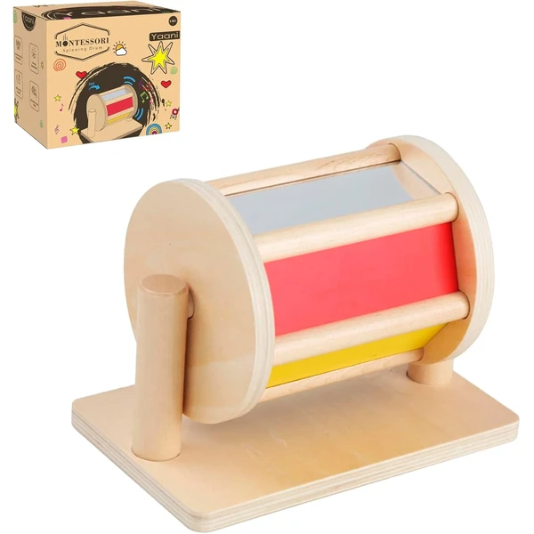
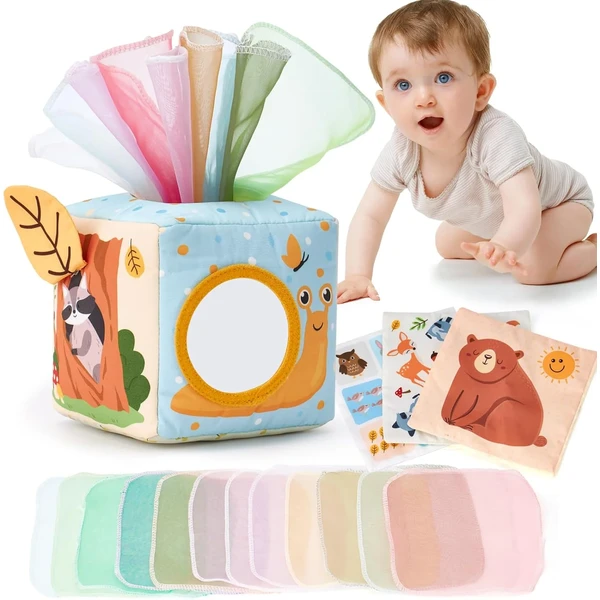
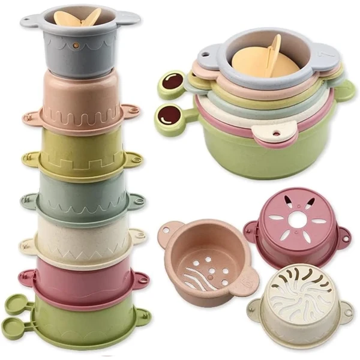
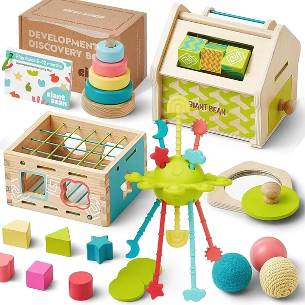

Set 5 en 1 Montessori sensorial
Set de juguetes Montessori 5 en 1 con caja de clasificación de formas, vasos apilables, cuerdas de silicona para morder y un juego de bloques de madera. Reúne varias actividades sensoriales para acompañar el gateo y los primeros meses de exploración.
⭐ ¿Por qué nos gusta?
- ✔ Combina clasificación, apilamiento y mordedores en un set.
- ✔ Materiales seguros pensados para la etapa de dentición.
- ✔ Favorece la coordinación y el desarrollo cognitivo.
💬 Lo que más destacan las familias
Las familias destacan que da para muchas actividades distintas y que mantiene entretenido al bebé durante bastante tiempo.
Edad recomendada: 6-12 meses
Ver en Amazon

Set Montessori 5 en 1 con xilófono
Set sensorial 5 en 1 con apilamiento de formas, xilófono, caja de pañuelos para el juego de causa-efecto y un peluche calmante para morder. Combina estimulación visual, táctil y auditiva para acompañar la etapa de gateo y dentición.
⭐ ¿Por qué nos gusta?
- ✔ Xilófono y caja de pañuelos para el juego de causa-efecto.
- ✔ Bloques y peluche aptos para la dentición.
- ✔ Letras y números en relieve para el aprendizaje temprano.
💬 Lo que más destacan las familias
Es de los sets más comentados por la cantidad de actividades distintas que ofrece y por mantener entretenido al bebé durante bastante tiempo.
Edad recomendada: 6-12 meses
Ver en Amazon

Vasos apilables de silicona
Set de nueve vasos apilables de silicona apta para uso alimentario, con distintas texturas para la dentición y pequeños orificios de drenaje que permiten usarlos también en el baño. Un clásico sencillo para apilar, encajar y explorar.
⭐ ¿Por qué nos gusta?
- ✔ Silicona 100% apta para uso alimentario.
- ✔ Distintas texturas, ideales para la dentición.
- ✔ Sirve también como juguete de baño.
💬 Lo que más destacan las familias
Las familias destacan que sirve tanto para el baño como para jugar fuera del agua, y que aguanta bien los mordiscos de los primeros dientes.
Edad recomendada: 6-12 meses
Ver en Amazon

Set sensorial Nene Toys
Set de actividades Montessori con caja de permanencia de tres bolas, torre apilable con bloques sensoriales, un puzle con espejo y un libro de tela. Reúne varias propuestas para trabajar la motricidad fina, la causa-efecto y la atención visual.
⭐ ¿Por qué nos gusta?
- ✔ Caja de permanencia para trabajar la causa-efecto.
- ✔ Combina apilamiento, puzle y libro de tela.
- ✔ Incluye un espejo para el autodescubrimiento.
💬 Lo que más destacan las familias
Las familias valoran tener varias actividades distintas en un mismo set, útil para ir alternando juegos según el momento.
Edad recomendada: 6-12 meses
Ver en Amazon

Vasos apilables Moonkie
Set de siete vasos apilables de silicona con distintos patrones y texturas en la base, pensados para apilar, encajar y usar como mordedor. La silicona apta para uso alimentario también permite llevarlos a la bañera.
⭐ ¿Por qué nos gusta?
- ✔ Siete piezas con texturas variadas.
- ✔ Silicona apta para uso alimentario, también como mordedor.
- ✔ Válido dentro y fuera del baño.
💬 Lo que más destacan las familias
Es uno de los sets apilables más comentados por su durabilidad y por lo bien que resiste el uso diario, tanto en el baño como fuera de él.
Edad recomendada: 6-12 meses
Ver en Amazon

Tambor giratorio arcoíris YAANI
Tambor giratorio de colores arcoíris pensado para animar al bebé a girar, empujar y descubrir causa y efecto. Favorece las habilidades motoras gruesas mientras explora el juguete desde distintos ángulos.
⭐ ¿Por qué nos gusta?
- ✔ Favorece las habilidades motoras gruesas.
- ✔ Colores arcoíris que estimulan la vista.
- ✔ Fabricación cuidada, pensada para durar.
💬 Lo que más destacan las familias
Es uno de los tambores giratorios más comentados por lo entretenido que resulta para el bebé y por la calidad del acabado.
Edad recomendada: 6-12 meses
Ver en Amazon

Caja de pañuelos sensorial hahaland
Caja de tela con pañuelos suaves de distintas texturas que el bebé puede sacar y volver a meter, trabajando la causa-efecto y la motricidad fina desde los primeros meses de exploración.
⭐ ¿Por qué nos gusta?
- ✔ Trabaja la causa-efecto al sacar y meter pañuelos.
- ✔ Distintas texturas y sonidos en cada pañuelo.
- ✔ Tela suave y segura para el bebé.
💬 Lo que más destacan las familias
Es uno de los juguetes sensoriales más comentados por lo entretenido que resulta sacar y meter los pañuelos una y otra vez.
Edad recomendada: 6-12 meses
Ver en Amazon

Vasos apilables 2 en 1 BERYLED
Set de siete vasos apilables de colores con orificios en la base, pensados para apilar tanto en horizontal como en vertical y también usarse en el baño. Favorece la coordinación y el reconocimiento de tamaños.
⭐ ¿Por qué nos gusta?
- ✔ Se apilan en horizontal y en vertical.
- ✔ Orificios en la base para usarlos también en el baño.
- ✔ Material sin BPA y bordes redondeados.
💬 Lo que más destacan las familias
Se valora que ofrezca dos formas distintas de apilar, dando más variedad de juego que unos vasos apilables convencionales.
Edad recomendada: 6-12 meses
Ver en Amazon

Set 5 en 1 Giant bean con torre apilable
Set Montessori 5 en 1 con torre apilable y ocho tipos de juego distintos, fabricado en silicona de grado alimenticio y madera. Incluye una guía de desarrollo pensada para orientar a las familias en cada etapa.
⭐ ¿Por qué nos gusta?
- ✔ Torre apilable y ocho tipos de juego en un set.
- ✔ Combina silicona alimentaria y madera.
- ✔ Incluye guía de desarrollo para las familias.
💬 Lo que más destacan las familias
Las familias destacan la guía de desarrollo incluida, que ayuda a saber cómo sacarle partido al set según la edad del bebé.
Edad recomendada: 6-12 meses
Ver en Amazon